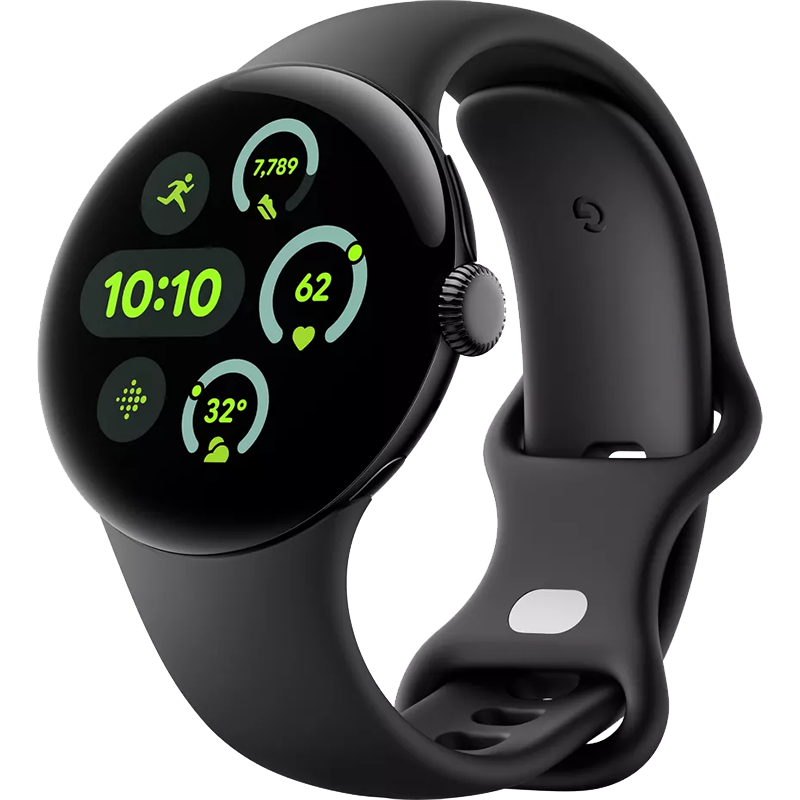
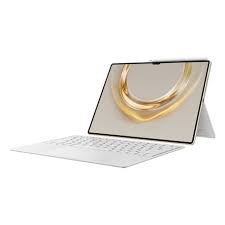

Product Picture
Product Name
Description
Price
Action
Smartphone
Experience the future of smartphones with the Apple iPhone 17 Pro Max. Packed with the powerful A19 Pro chip, a pro-grade triple camera system, and a stunning 6.9-inch Super Retina XDR display, this device redefines performance, creativity, and elegance. Get yours today with Apple Gadgets’ exclusive offers, EMI plans, and official warranty support in Bangladesh.
$699
Buy Now
Laptop
The brand new Celestial Blue color draws its inspiration from the future, and gives ZenBook Duo a sophisticated air of timeless innovation. As befits such a revolutionary concept, it’s also decorated with a unique asymmetric version of the iconic Zen-inspired spun-metal finish: an intriguing design detail that gives ZenBook Duo a totally unmistakable identity. With the ErgoLift hinge providing a 5.5° keyboard tilt, ZenBook Duo not only gives you a more comfortable typing experience, but cooling and audio performance are also enhanced. ASUS ScreenPad Plus gives you on-the-go computing like you’ve never experienced before. It’s a full-width secondary touchscreen that works seamlessly with the main 14-inch FHD display, giving you endless ways to optimize and personalize your workflow. A series of handy built-in apps help boost your productivity. Quick Key allows one-tap automation of complex keyboard sequences, and Handwriting lets you input text intuitively. There are also useful quick controls such as App Switcher, ViewMax and Task Swap for intuitive interactions between the main display and ScreenPad Plus. Task Group lets you lock into work mode by opening multiple tasks with a single touch. And now you can drag apps or in-app toolbars onto ScreenPad Plus to give you more room to work on the main display, wherever you are. With ZenBook Duo and an active stylus you can really let your creativity flow. ScreenPad Plus gives you a superbly ergonomic and stable platform for writing or drawing. Take notes, sketch out your ideas, or do precision graphical editing in the most intuitive way ever. ScreenPad Plus gives you effortless app multitasking, so ASUS works closely with third-party developers — including professional video-editing software developer Corel, with more to come — to optimize ScreenPad Plus for the ultimate productivity. ScreenPad Plus is your gateway to endless possibilities. The Nvidia MX250 2GB Graphics Card in ZenBook Duo supercharges your laptop for work or play. It gives you up to 3.5X-faster performance than an integrated graphics chip for photo and video-editing applications, as well as faster, smoother gaming. With the ultraportable ZenBook Duo you have the ultimate power for on-the-go content creation at your fingertips. The FHD NanoEdge display on ZenBook Duo has a four-sided frameless design to upgrade your viewing experience, giving you more screen, and less distraction! It’s also PANTONE Validated for professional-grade color accuracy. The ASUS Golden Ear team worked with renowned home and automotive audio experts Harman Kardon to ensure the best audio experience. A tailored mix of superior hardware — including smart amplifier technology that delivers louder sound with no distortion — and finely tuned software gives you sound like no other laptop.
$999
Buy Now

Smartwatch
The Pixel Watch 2 is completely upgraded inside and out including major performance improvements powered by Qualcomm Snapdragon W5 Gen 1 Platform, it provides much smoother performance and more snappy experience as well as longer battery life. The watch also provides improved fitness tracking capabilities with a multi-path heart rate sensor, body response and skin temperature sensors, along with Google and Fitbit fitness app experience.
$199
Buy Now
Bluetooth Speaker
Massive JBL Original Pro Sound with Deepest Bass. Fill the air with massive JBL Original Pro sound with deep, powerful bass. The JBL Boombox 3 Wi-Fi makes it feel like you’ve just stepped into the middle of a concert thanks to its powerful bass from a built-in subwoofer, two mid-range drivers, and dual tweeters, all of which make up its best-in-class 3-way speaker design.
$49
Buy Now

Tablet
The Huawei MatePad Pro 13.2 (2025) takes tablet computing to new heights with its premium build, cutting-edge features, and powerful performance. Whether you're into creative work, multitasking, or entertainment, this tablet provides the ideal platform for seamless productivity and immersive experiences. Here, we take a closer look at the features, specs, and benefits of the MatePad Pro 13.2 that makes it a standout device for professionals and creative individuals.
$399
Buy Now